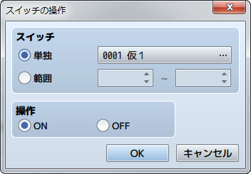
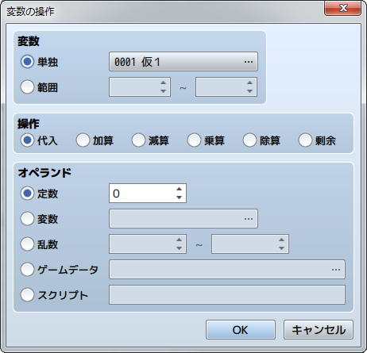
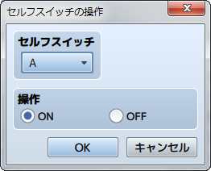
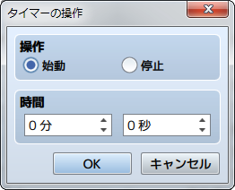

ゲーム進行
スイッチの操作

機能
スイッチの値（ON／OFF）を変更します。
設定項目
- スイッチ
- 変更対象のスイッチを指定します。ひとつのスイッチを操作する場合は［単独］を選び、対象のスイッチを指定します。連続する番号のスイッチの値をまとめて変える場合は［範囲］を選び、スイッチ番号の範囲を指定します。
- 操作
- スイッチに代入する値（ON／OFF）を指定します。
変数の操作

機能
変数に格納されている値を変更します。
設定項目
- 変数
- 値を変える変数を指定します。ひとつの変数を操作する場合は［単独］を選び、対象の変数を指定します。連続する番号の変数をまとめて操作する場合は［範囲］を選び、変数番号の範囲を指定します。
- 操作
- 値の計算方法を指定します（備考参照）。［変数］で指した変数の値は、操作前の変数の値、計算方法、オペランドの値に基づいて計算した値に変わります。
- オペランド
- ［操作］の計算に用いる値を指定します（備考参照）。
備考
-
［操作］で指定する計算方法の内容は以下のとおりです。
代入 オペランドの値を代入（計算なし） 加算 ［操作前の変数の値＋オペランド］の計算値を代入 減算 ［操作前の変数の値－オペランド］の計算値を代入 乗算 ［操作前の変数の値×オペランド］の計算値を代入 除算 ［操作前の変数の値÷オペランド］の計算値を代入 剰余 ［操作前の変数の値÷オペランド］の余りを代入 -
［オペランド］で指定する値の内容は以下のとおりです。
定数 固定値を適用します。右欄に値を指定します。 変数 変数の値を適用します。参照する変数を指定します。 乱数 乱数（不作為に決まる数）の値を適用します。発生させる乱数の範囲（ ゲームデータ ゲームのプレイ状況に関する値を適用します。［…］をクリックすると開くウィンドウで参照する情報を指定します（下記参照）。 スクリプト 入力したJavaScriptの評価結果を値に適用します。 -
［オペランド］に［ゲームデータ］を指定した場合は、オペランドの値とするデータを以下からひとつ指定します。
アイテム 指定のアイテムの所有数を適用します。 武器 指定の武器の所有数を適用します。 防具 指定の防具の所有数を適用します。 アクター アクターのパラメータ（HP、MPなど）の値を適用します。対象のアクターとパラメータを指定します。 敵キャラ 敵キャラのパラメータ（HP、MPなど）の値を適用します。対象の敵キャラとパラメータを指定します。この項目は戦闘時のみ有効です。 キャラクター プレイヤーまたはイベントの座標や向きを使用します。 マップX、マップY ：現在地のマップ座標 向き ：現在の向き（上＝8／左＝4／右＝6／下＝2） 画面X、画面Y ：画面上の表示位置の座標（ドット） パーティ パーティ内で指定した位置にいるアクターのIDを使用します。 その他 その他のデータを使用します。
セルフスイッチの操作

機能
セルフスイッチの値を操作します。
設定項目
- セルフスイッチ
- 対象のセルフスイッチ（A～D）を指定します。
- 操作
- スイッチに代入する値（ON／OFF）を指定します。
備考
- バトルイベントでは使用できません。
タイマーの操作

機能
制限時間（残り時間）を計測するタイマーを始動／停止します。タイマーを始動すると画面右上に残り時間が自動で表示されます。メニューの表示中は、タイマーのカウントダウンは一時停止します（計測の対象外になります）。タイマーの残り時間で処理を分岐させるには、［条件分岐］のイベントコマンドなどを使います。
設定項目
- 操作
- 制限時間の計測を開始するには［始動］、計測を終了するには［停止］を指定します。
- 時間
- ［操作］に［始動］を指定した場合に、制限時間（0分0秒～99分59秒）を指定します。